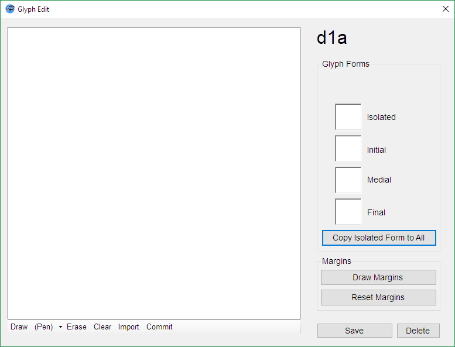

Help Documentation
Creating a New Alphasyllabary
Before you can add any content to your alphasyllabary, you need to create and Alphasyllabary Prototyper *apt file. In the File menu, click New and save your new file. This will be created within a folder of the same name.
Designating Letter Pairs
AP works by combining row entries and column entries to for a letter pair, and producing glyphs for each pair. For example, a row entry of "a" and column entry of "b" combine to make pair "ab". The grid where "a" and "b" intersect will be the glyph for "ab".
The letter pairs are entered in row and column entries in the This Syllabary menu. Groups of 3 letters are not allowed, such as "a" and "de" forming "ade", but numbers can be substituded, e.g. "a" and "d1" forming "ad1", or "a1" and "d" forming "a1d".
Creating and Editing Glpyhs/Characters

To edit a glyph, double-click on the grid square for that letter pair and the Glyph Edit window will appear.
There are two methods for adding glyphs - by drawing or importing. To draw, simply click the Draw button and click/move on the canvas. The pen type can be changed to "Ink" using the dropdown menu next to it. To import your own file, click Import and browse to your file.
For either method, you must click Commit to bind your glyph to its form. Comitting will update the preview windows on the right of the window.
To edit different glyph forms, click the appropriate preview window and draw/import.
When done, click Save to finalise and close the window.
|